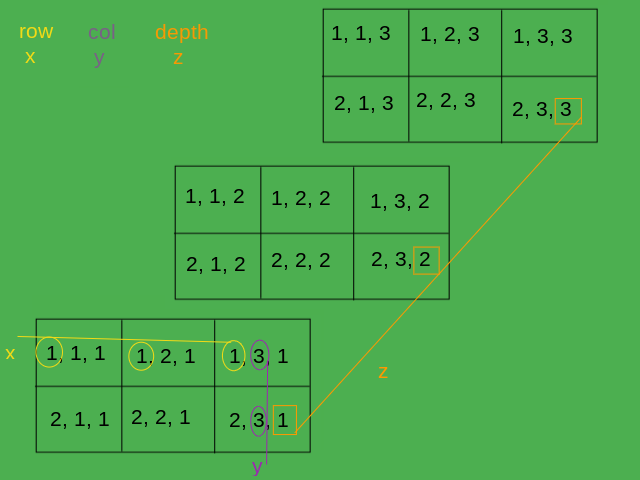
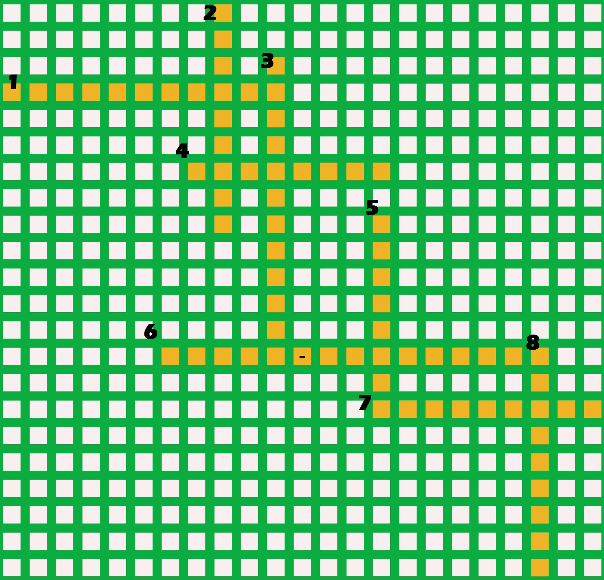
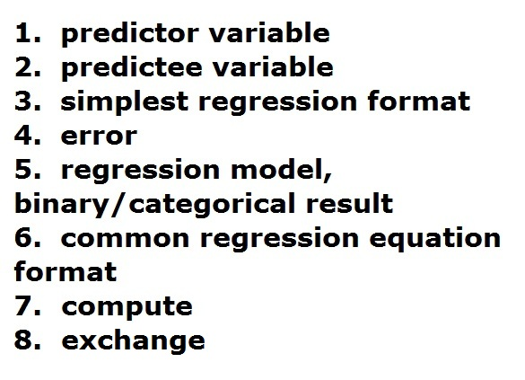
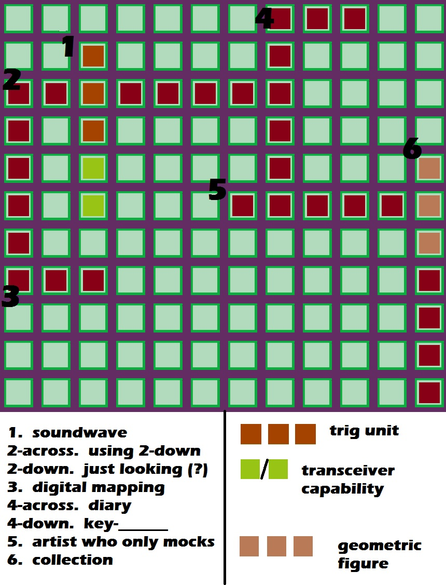
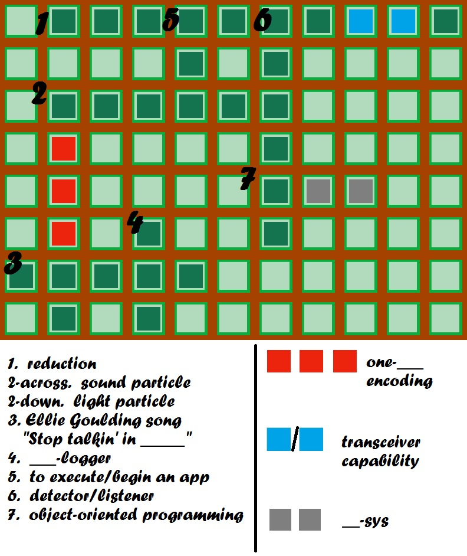
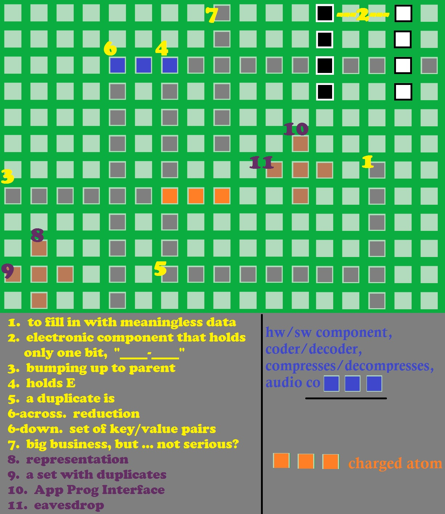

Acoustics
Sound is a vibration of particles. Sound travels (and attenuates?) in solids the fastest, because solids have the most particles.
[attenuate: reduce, weaken]
onlinemictest.com, a pitch detector
learn.virtualspeech.com
Botany
"So now, my man,
you must do your best,
to keep up your habit,
until your arrest,"
~ "King Heroin"
cocaine
Chemistry
Chemistry is the central science!
containment
He's talking about the importance of air, but he sounds like he doesn't breathe.
Birthing Instincts
"The problem is ... hospitals don't make money doing nothing. They don't know how to leave a patient [client] alone."
hypothesis: long-term vegetarianism can make you look like a carrot
Yellowstone Grand Prismatic Springs
from Wikipedia and Flickr
All humans are the same species.
All humans have multiple intelligences.
How did life start? (How was it created?)
abiogenesis: life from non-life
It's possible that the tremendous amounts of heat and pressure at the core of Earth created the first microbes.
Abiogenesis is NOT synthetic biology. Synthetic biology is the attempt to bring back to life something that once was alive. (Frankensteinian stuff.) Abiogenesis is the CREATION of a microbe(s) from parts which we consider not to have been part of a recently living thing.
(basically, particles such as electrons, quarks, muons, gluons, carbon atoms, etc.)
Some people can throw their voices. Can they throw their hearing?
Did anything similar to the date-rape drug exist 2,000 years ago?
apex: top
cold-blooded: having an internal temperature that varies with the external temperature
cosmopolitan: widespread; Orcas are cosmopolitan. They are present in every ocean.
3-2-1-Contact
lab-grown meat
" ... license to love,
insurance to hold,
melt all your memories
and change
into gold,"
~ Sade, Ray St. John, "Smooth Operator"
hypothesis: The brain/body continues to create new cells until we die, just not enough for us to live forever.
Computer Science


The Y coord should now work even after scrolling.
The winning code is shown below (I looked for simple examples.)
Thank you developer.mozilla.org.
function getYPosition()
{
var top = window.pageYOffset || document.documentElement.scrollTop;
return top;
}
var y = ((event.clientY - xy.offsetTop) + getYPosition());
Also thank you stackoverflow.com.
A video made at synthesia:
I wanted to see if some embed code from Wikipedia worked:

From Wikipedia: "scientific visualization"
(a PET scan of a patient injected with a "tracer" (?) substance to identify tumors)
pixel: "picture element", the smallest addressable element of an image (or a device display area)
"When all three primary colors are combined at each pixel, this allows for as many as 2^(8*3) or 16,777,216 different colors, or 'true color.' This is referred to as 24 bits per pixel since each pixel is composed of three 8-bit color channels."
CambridgeInColor
Color is a property of light. If you change the particle configuration of an object so that it appears to be a different color, you have changed the way (frequency) light is reflected from that object. (What color would it be without any light?)
hologram: a three-dimensional image formed by the interference (crossing) of light beams
holography: the making of holograms
holograph: a document that is wholly written by the person whose signature it bears
histogram: similar to a bar chart
heuristics: a type of learning, I think
A 3-dimensional array:

(A deck of cards would only be a 2-d array. Color is included in suits.)

Let me know if there are any residuals!

4. (not necessarily an error, sometimes just a "leftover")
If R came from S, will Q come from R?
R
Python
We don't talk about all that can go wrong!
sans
cwe
"Hope for the best, but plan for the worst."
Wireless signal blocking(?):
highspeedoptions
signalboosters
sciencebuddies
Wikipedia "Lead"
{kind=link}

Let me know if there are any problemos!

Enjoy!

1 not necessarily meaningless, but a guess
Fotos of faces,
lined up in the queue,
Trails and traces,
output depending
on the input of you.
Is one datum a pattern?
Computer science is much more than a field of study. It is a field of tricks.
The Too-Much-Information Age: "I can name that tune in 0 notes."
pedantic: academic show-off; arrogant
wordle
women-owned AI companies
orbofi.com
medium.com
R2-D2 impression
Earth Science
To where does your toilet flush?
From where does your drinking water come?
If you build your house out in the middle of nowhere,
from where will your electricity come?
(Should this post be on the social page?)
"There is the same amount of water on Earth now as there has always been."
Where do hot dogs come from?
Eekonomics
(Is economics a science?)
If demand increases price,
does that include the demand for pencils?
hypothesis: restaurants get better meats than grocery stores
(perhaps the processing is different?)
Y'all ready for the Crash of '29?
Big Oil:
companiesmarketcap.com
eia.gov
investopedia
Wikipedia
Geometry
(Is math a science? Or is it maybe a humanity? An accessory?)
Some neat stuff on Wikipedia:
cycloid:

Zorgit, CC BY-SA 3.0, via Wikimedia Commons
astroid:

en:w:User:Sam Derbyshire, Public domain, via Wikimedia Commons
hypocycloid:

Sam Derbyshire at the English Wikipedia, CC BY-SA 3.0
Deltoid curves
gallery of curves
3-d printing
bindi: a decorative mark worn in the middle of the forehead by Indian women
Cyclops: a one-eyed giant
epicanthic: "above" + "corner"; the epicanthic fold = "Asian eyes"
monopod: mythical creature with only one leg and therefore only one foot
"There must be 50 ways to leave your lover,"
~ Paul Simon
$2300 chair
Physics
imho, physics is all about particles. What makes one particle more valuable than another?
some abstract notes about particles:
There are two types of particles:
Those that are already there (around you)
and those that were shot there.
those that are already there, which are capable of movement,
and those that were emitted by a source.
sound vs. light (?)
Light is not a wave. Light is a particle that moves in the form of a wave.
Bean counters aren't just employed in the accounting business!
If matter (energy) is never created nor destroyed, but only transferred, (usually to a less useful form, here on Earth), then in some areas of the universe, matter (energy) must be "building up" to a more useful form?
reverse filter, lets larger objects pass, traps smaller objects:
atlas.com
journal: Science Advances
Penn State
spoiler alert ?
car engine, Twitter page: cooltechtipz
Sounds of the Geiger counter:
findsounds.com
nerdfighteria.info
Worldwide E consumption:
elements.visualcapitalist.com
ourworldindata
The further you pull back a slingshot ... ?
What is the difference between positive and negative feedback?
Las Vegas Sphere
science girl on Twitter
Could this be an object far away that causes some astronomers to think the universe has a border?
zenith: top
Many methods that work well in theory can be exploited in practice. In fact, you can probably count on exploitation.
Zoology
catathymia: the state of being ruled by emotion
MilwaukeeZoo.org
ichthyology: the study of fish
Shedd Aquarium